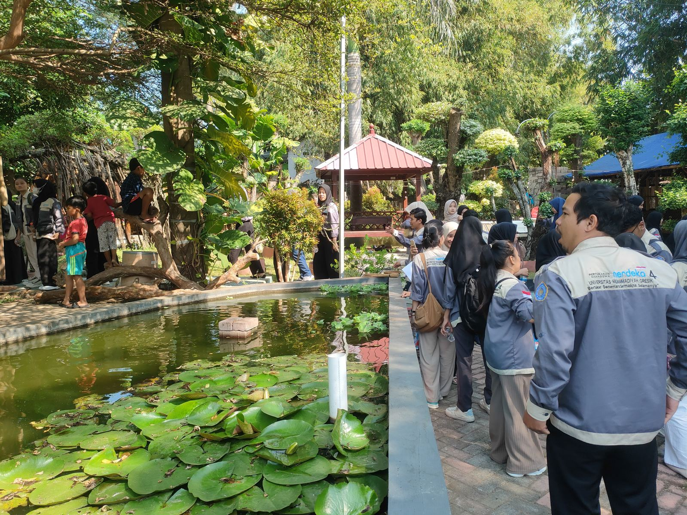
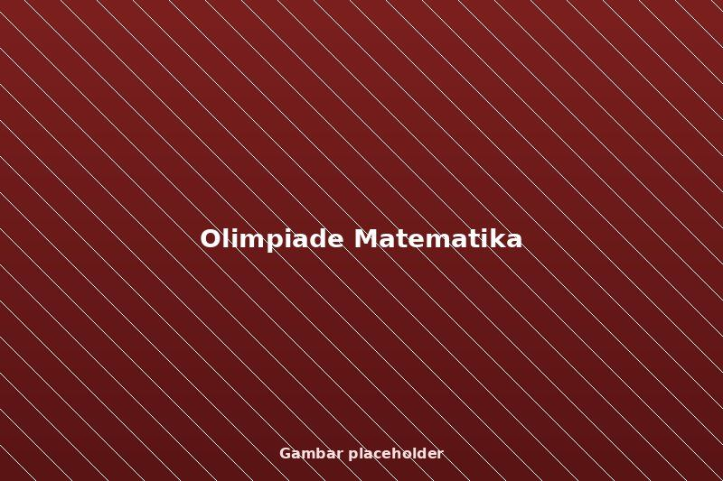
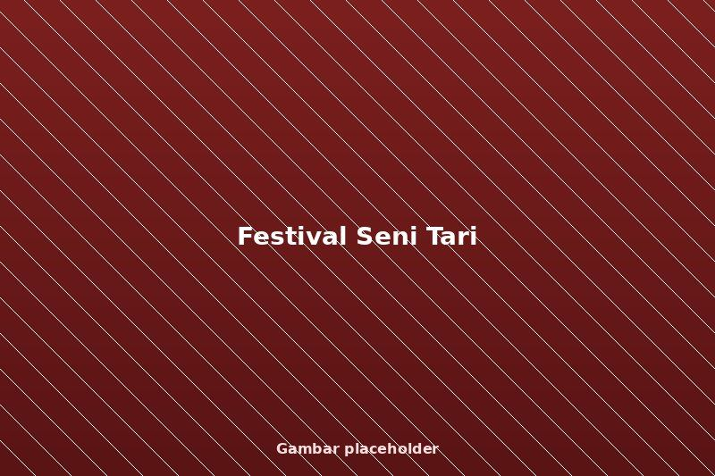
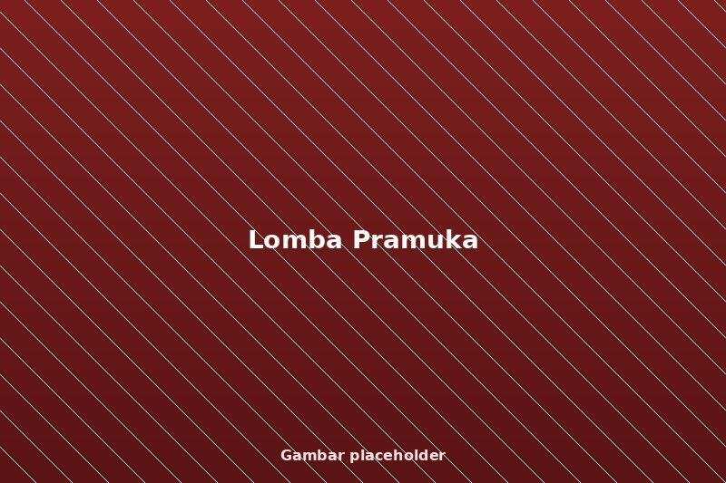
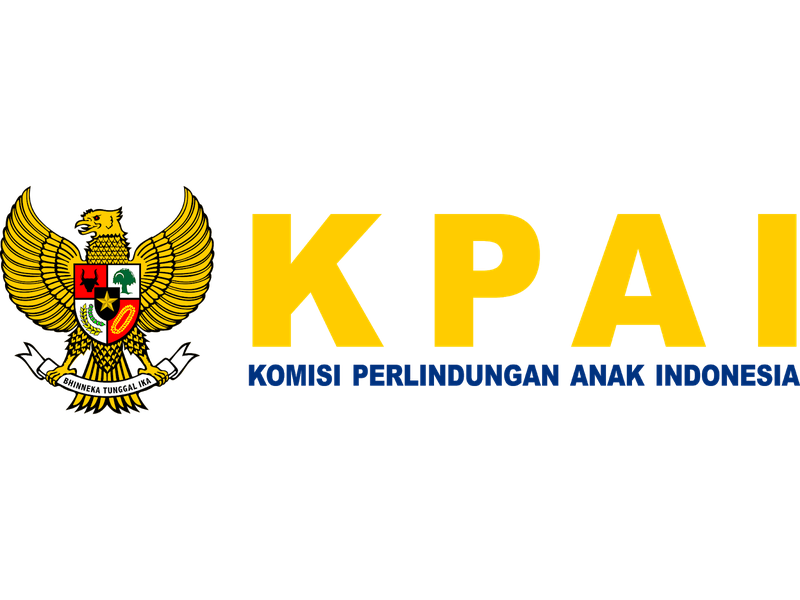
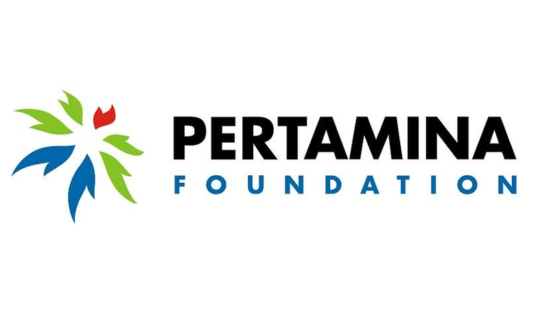
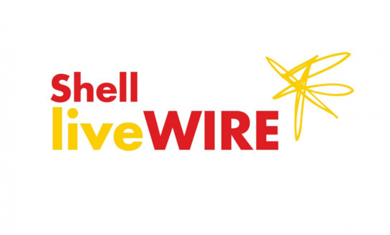
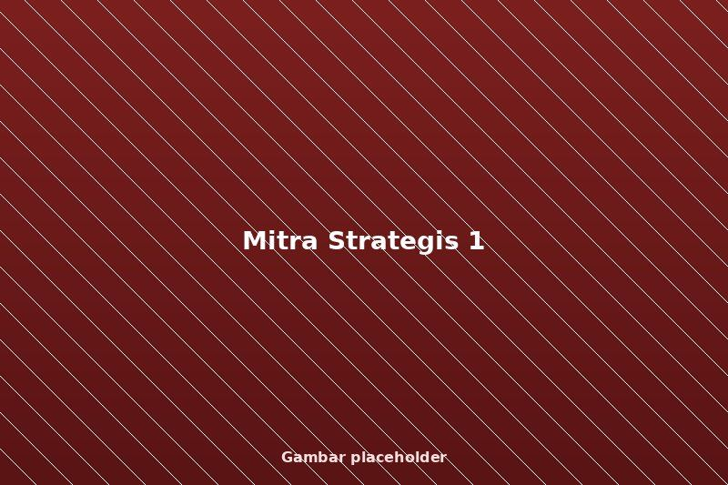
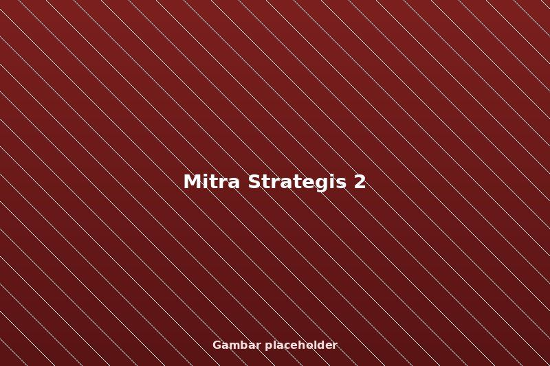
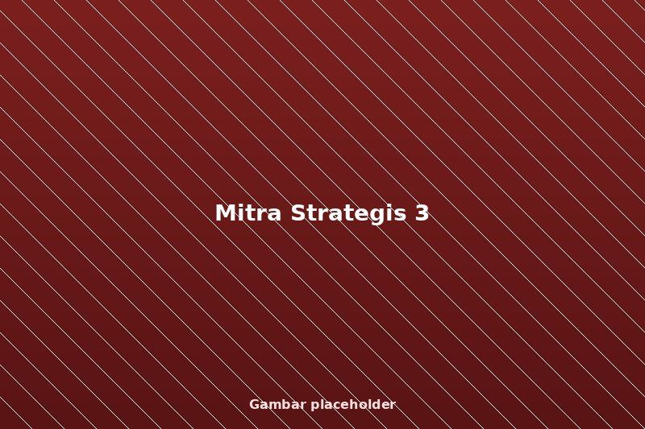

Rekam Prestasi
Bukti Kualitas Pendidikan
Rekam jejak Yayasan mencetak peserta didik berprestasi, berkarakter, dan siap menghadapi masa depan.
2014
Tahun Inisiasi Yayasan
6+
Program & Apresiasi Nasional
5+
Mitra Strategis Nasional
3
Fase Pengembangan Program
Prestasi Unggulan Peserta Didik
Capaian akademik dan non-akademik yang mencerminkan kualitas pembinaan, kedisiplinan, dan budaya berprestasi sekolah.

Olimpiade Matematika
Juara 1 tingkat Kabupaten, membuktikan keunggulan literasi numerasi siswa.

Festival Seni Tari
Juara 2 tingkat Provinsi, hasil pembinaan minat dan bakat seni budaya.

Lomba Pramuka
Juara Umum, mencerminkan karakter, kepemimpinan, dan kerja sama tim.
Apresiasi & Mitra Nasional
Rekam jejak kolaborasi, program nasional, dan mitra strategis yang memperkuat dampak yayasan di bidang pendidikan, kepemudaan, kewirausahaan, dan sosial.
Program Organisasi Penggerak
Kemendikbud RI (2021–2023)
Peraih Mandaya Award
Kemenko Koordinator Pemberdayaan Masyarakat (2025)
Peraih Anugerah KPAI
Komisi Perlindungan Anak Indonesia (2025)
PFMuda
Pertamina Foundation (2021–2024)
Shell LiveWIRE Energy
Program Kewirausahaan (2020)
Matching Fund
PT KPI RU II Dumai (2023)
Wirausaha Muda Mandiri
Program Nasional UMKM
BAZNAS
Kolaborasi Sosial & Pemberdayaan
Pemerintah Daerah
Kabupaten Gresik
Kementerian Pendidikan
Kemendikbud RI
Apresiasi & Program Nasional
Pengakuan dan kepercayaan dari pemerintah, industri, dan lembaga nasional terhadap kiprah yayasan dalam pendidikan, lingkungan, dan pemberdayaan masyarakat.
Peraih Mandaya Award 2025
Program nasional yang mendukung penguatan kapasitas, inovasi, serta keberlanjutan inisiatif yayasan di tingkat regional dan nasional.

Peraih Anugerah KPAI 2025
Program nasional yang mendukung penguatan kapasitas, inovasi, serta keberlanjutan inisiatif yayasan di tingkat regional dan nasional.

PFMuda (2021–2024)
Program nasional yang mendukung penguatan kapasitas, inovasi, serta keberlanjutan inisiatif yayasan di tingkat regional dan nasional.

Program Organisasi Penggerak – Kemendikbud
Program nasional yang mendukung penguatan kapasitas, inovasi, serta keberlanjutan inisiatif yayasan di tingkat regional dan nasional.

Shell LiveWIRE Energy Solutions 2020
Program nasional yang mendukung penguatan kapasitas, inovasi, serta keberlanjutan inisiatif yayasan di tingkat regional dan nasional.

Matching Fund PT KPI RU II Dumai 2023
Program nasional yang mendukung penguatan kapasitas, inovasi, serta keberlanjutan inisiatif yayasan di tingkat regional dan nasional.
Kolaborasi Strategis Lintas Sektor
Yayasan menjalin kolaborasi dengan pemerintah, industri, perguruan tinggi, dan komunitas dalam pengembangan pendidikan, riset, serta pemberdayaan masyarakat.
- • Kementerian Pendidikan, Kebudayaan, Riset & Teknologi
- • PT KPI (Pertamina Group)
- • Shell LiveWIRE Indonesia
- • Perguruan Tinggi & Komunitas Riset


